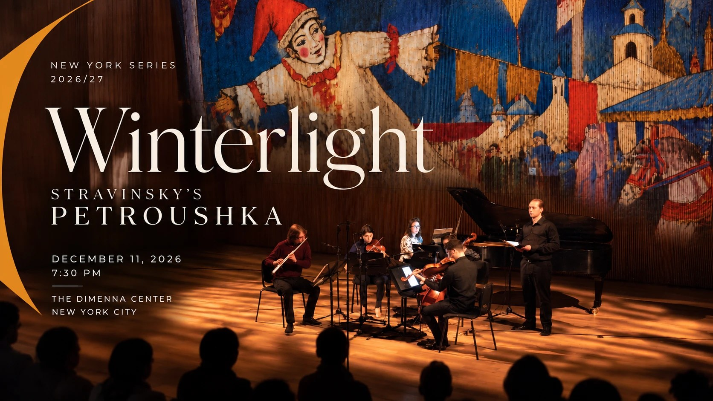

Winterlight

CreArtBox plays Winterlight on Friday, December 11, 2026 at 7:30 pm, at The DiMenna Center for Classical Music, 450 West 37th Street, between Ninth and Tenth Avenues in Midtown Manhattan.
CreArtBox presents Winterlight, the second concert of its 2026/27 New York Series, featuring Stravinsky's Petroushka as the centerpiece of the evening, alongside works by Maurice Ravel, Oliver Caplan, and the world premiere of Hannah Selin's Tectonic Lullaby. The performance combines live chamber music with visual projections created specifically for the program.
The evening opens with the world premiere of Tectonic Lullaby by Hannah Selin, a composer, violist, and vocalist. Written for piano quintet, the work receives its first public performance at The DiMenna Center.
Maurice Ravel's Ma Mère l'Oye (Mother Goose) draws on French fairy tales by Charles Perrault, Madame d'Aulnoy, and Madame Leprince de Beaumont. Originally composed for piano four hands between 1908 and 1910, its five movements include musical interpretations of Sleeping Beauty, Tom Thumb, and Beauty and the Beast. For this performance, CreArtBox has created visual projections using illustrations from historical editions of the fairy tales.
The program continues with Canciones de Monteverde by Oliver Caplan. Written for flute, violin, viola, and cello, the piece was selected through CreArtBox's International Call for Scores.
The highlight of the evening is Igor Stravinsky's Petroushka, one of the defining works of the early twentieth century. Premiered in Paris in 1911 by the Ballets Russes, the ballet takes place at a Russian Shrovetide fair, where three puppets come to life in a story of love, jealousy, and tragedy. Known for its rhythmic complexity, vivid orchestration, and theatrical character, Petroushka remains one of Stravinsky's most celebrated compositions.
CreArtBox presents the work in a chamber arrangement, with visual projections accompanying the performance.
Program
- Hannah SelinWorld premiereTectonic Lullaby · for piano quintet 10'
- Maurice RavelMa Mère l'Oye 17'
- Oliver CaplanWinner of the open callCanciones de Monteverde · for flute and string trio 12'
- Igor StravinskyPetroushka · chamber arrangement 40'
Performers
- Guillermo Laportaflute
- Josefina Urracapiano
- Emilie-Anne Gendronviolin
- Matthew Cohenviola
- Julia Yangcello
About CreArtBox
CreArtBox is a New York–based chamber music ensemble founded in 2013, performing at The DiMenna Center for Classical Music and on tour internationally. The ensemble's New York Series presents approximately six productions a year - combining commissioned premieres, reimagined classics, and collaborations with visual artists, filmmakers, and writers.
In parallel, CreArtBox runs Festival ADAR each August in rural Asturias, Spain - an international arts festival pairing chamber music with site-specific performance in churches, hórreos, and mountain villages. Both the New York Series and Festival ADAR are produced by CreArtBox, Inc., a 501(c)(3) non-profit.